통신선로산업기사 (2016-03-05 기출문제)
1과목: 디지털전자회로
1. 다음 중 초크코일과 콘덴서로 구성된 필터회로에서 리플률을 감소시키는 방법으로 옳은 것은?
- 인덕턴스 L을 크게 한다.
- 커패시턴스 C를 작게 한다.
- 주파수를 낮춘다.
- 부하저항 R을 작게 한다.
(정답률: 70%)

2. 다음 중 동일 규격의 다이오드를 병렬로 연결하면 회로의 특성은 어떻게 변하는가?
- 순방향 전류를 증가시킬 수 있다.
- 역전압을 크게 할 수 있다.
- 필터회로가 불필요하게 된다.
- 전원변압기를 사용하여도 항시 사용할 수 있다.
(정답률: 82%)
3. 송신기의 완충증폭기(Buffer Amp)에 많이 쓰이는 증폭 방식은?
- A급
- B급
- C급
- AB급
(정답률: 알수없음)
4. 다음 중 전력 이득이 가장 큰 접지 증폭회로는 무엇인가?
- 베이스 접지 증폭회로
- 컬렉터 접지 증폭회로
- 이미터 접지 증폭회로
- 고정 접지 증폭회로
(정답률: 73%)
5. 다음 중 B급 푸시풀(Push-Pull) 전력증폭기의 장점에 대한 설명으로 옳은 것은?
- 출력효율이 높고, 일그러짐이 적다.
- 높은 주파수를 증폭하는데 적당하다.
- 전압이득을 크게 할 수 있다.
- 전도지연 특성이 개선된다.
(정답률: 70%)
6. 어떤 증폭기의 전압증폭도가 100일 때 전압이득은 몇 [dB] 인가?
- 10[dB]
- 20[dB]
- 30[dB]
- 40[dB]
(정답률: 알수없음)
7. 다음 중 발진조건으로 적합한 것은?
- 궤환루프의 위상지연이 90°이다.
- 궤환루프의 전압이득이 0이고, 위상지연이 180°이다.
- 궤환루프의 전압이득의 크기가 1이고, 위상지연이 0°이다.
- 궤환루프의 전압이득이 1보다 작고, 위상지연이 90°이다.
(정답률: 알수없음)
8. 수정 발진회로에서 직렬 공진 주파수를 fs, 병렬 공진 주파수를 fp라 할 때 수정 발진회로가 안정된 동작을 하기 위한 동작 주파수 조건은?
- fs보다 낮게 한다.
- fs보다 높게 한다.
- fp보다 낮게, fs보다 높게 한다.
- fp보다 높게, fs보다 낮게 한다.
(정답률: 80%)
9. 다음 디지털 변조방식 중 오류확률이 가장 낮은 것은?
- 4진 QAM
- 4진 FSK
- 4진 DPSK
- 4진 PSK
(정답률: 75%)
10. 다음 중 디지털 변조(불연속 레벨변조)방식에 해당하는 것은?
- 펄스진폭변조(PAM)
- 펄스폭변조(PWM)
- 펄스위치변조(PPM)
- 펄스부호변조(PCM)
(정답률: 62%)
11. 다음 중 반송파의 위상과 진폭을 상호 직교하며 신호를 혼합하는 변조 방식은?
- ASK
- FSK
- PSK
- QAM
(정답률: 알수없음)
12. 다음 중 클램핑(Clamping) 회로에 대한 설명으로 옳은 것은?
- 반파 정류 회로이다.
- 입력 파형의 일정 값 이하만 나타난다.
- 일정한 값 사이에만 출력으로 나타난다.
- 입력 파형의 모양은 그대로 유지하면서 파형의 평균 레벨을 수직으로 변화시킨다.
(정답률: 72%)
13. 다음 중 외부로부터 트리거(Trigger) 신호 없이 스스로 준안정 상태에서 다른 준안정 상태로 변화를 되풀이 하는 것은?
- 비안정 멀티바이브레이터
- 쌍안정 멀티바이브레이터
- 단안정 멀티바이브레이터
- 슈미트 트리거
(정답률: 알수없음)
14. 다음 논리 회로에서 입력 X는 0, Y는 1일 때 출력값 및 논리 회로와 등가은 논리게이트(Logic Gate)를 표현한 것으로 옳은 것은?
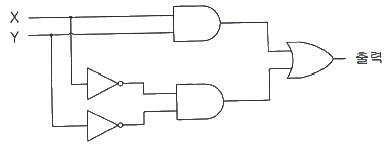
- 1, NOR 게이트
- 0, XNOR 게이트
- 0, NAND 게이트
- 1, XOR 게이트
(정답률: 47%)
15. 10wlstn 45를 2진수로 변환한 값으로 맞는 것은?
- (101100)2
- (101101)2
- (101110)2
- (101111)2
(정답률: 85%)
16. 3초과 코드 0111의 10진수 값과 그레이 코드(Gray Code) 0111의 10진수 값을 각각 나열한 것은?
- 4, 5
- 5, 6
- 6, 7
- 7, 8
(정답률: 80%)
17. JK 플립플롭(Flip-Flop)이 정상적으로 동작할 때, 두 입력 J와 K 값이 1이고, 클럭(Clock)이 인가될 경우 출력 상태는?
- Set
- Reset
- Toggle
- 동작불능
(정답률: 알수없음)
18. 다음 중 레지스터(Register)의 기능으로 맞는 것은?
- 펄스 신호의 발생
- 데이터의 일시 저장
- 인터럽트(Interrupt) 제어
- 클럭(Clock) 회로의 동기
(정답률: 70%)
19. 다음 그림과 같은 논리 회로는 어떤 기능을 수행하는가?
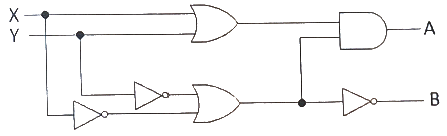
- 일치 회로
- 반가산기
- 전가산기
- 반감산기
(정답률: 알수없음)
20. 3개의 입력 A, B, C 중 2개 이상이 1일 때 출력 Y가 1이 되는 다수결 회로의 논리식으로 맞는 것은?
- Y = AB + BC + AC
- Y = A × B × C
- Y = ABC
- Y = A + B + C
(정답률: 알수없음)
2과목: 유선통신기기
21. 다음 중 유선 전화기의 다중주파수(Multi-Frequency) Signaling 에 대한 설명으로 적합하지 않은 것은?
- 기계식 교환기에 사용한다.
- 음성 주파수 대역내의 주파수를 사용한다.
- 고군과 저군 두 개의 주파수를 조합하여 신호를 만든다.
- 발진 회로와 푸시버튼(Push Button) 등으로 구성되어 있다.
(정답률: 92%)
22. 광학문자판독장치(OCR)와 직접적인 관계가 없는 것은?
- 패턴 인식 기술
- 광전 변환 기술
- 문자 판독 기술
- 전광 변환 기술
(정답률: 알수없음)
23. 전화기의 특성을 표현하는 항목 중 가장 관련이 적은 것은?
- 안전성
- 신뢰성
- 명료도
- 충실도
(정답률: 알수없음)
24. 다음 중 G4 팩시밀리 기준을 설명한 것으로 맞는 것은?
- 대표적인 아날로그 팩시밀리로서 빠른 전송 속도를 자랑한다.
- MH와 MR 방식을 사용하는 것으로 A4 표준 원고인 경우 전송시간이 약 1분 이상 소요된다.
- 최대 9,00[bps]의 고속 전송이 가능하다.
- A4 표준 원고를 전송하는데 약 10초 정도 걸리며, 다기능 문서 통신을 할 수 있다.
(정답률: 73%)
25. 푸시 버튼 다이얼의 신호 규격 중 신호 송출 레벨의 고군 주파수에 해당 하는 것은?
- -6.0±2.0[dBm]
- -8.0±2.0[dBm]
- -4.0±2.0[dBm]
- -2.0±2.0[dBm]
(정답률: 알수없음)
26. 전자교환기의 통화회로에 의한 분류가 아닌 것은?
- 공간분할방식(SDS)
- 시간분할방식(TDS)
- 주파수분할방식(FDS)
- 파장분할방식(WDM)
(정답률: 90%)
27. 호 접속 과정에서 교환기가 착신 가입자전화에 보내는 신호는?
- 점유신호
- 선택신호
- 응답신호
- 호출신호
(정답률: 알수없음)
28. 교환기에서 TDS(시간분할방식) 통화로 구성방식의 특징이 아닌 것은?
- 통화로 및 제어부 모두 전자소자로 구성된다.
- SDS(공간분할방식)에 비해 점유면적이 넓다.
- 통화로의 다중화가 가능하다.
- 통화로의 신호는 디지털 신호이다.
(정답률: 알수없음)
29. 다음 중 지능망의 특징으로 옳지 않은 것은?
- 망 서비스 제공 기능의 집중화
- 가입자 정보관리기능의 집중화
- 대량 소품종 특성을 가지는 서비스의 경제적이고 효율적인 제공
- 기존 전화망을 이용해서 다양한 신규 서비스를 경제적, 효율적으로 제공
(정답률: 91%)
30. 다음 중 ATM 교환기에 대한 설명으로 옳지 않은 것은? (단, VPI: Virtual Path Identifier, VCI: Virtual Channel Identifier)
- ATM 셀은 데이터 교환의 기본단위로서 5바이트의 유로부하(Payload)와 48바이트의 헤더(Header)로 구성된다.
- VPI와 VCI 필드는 입력포트번호와 함께 ATM 셀의 라우팅(Routing)에 사용되는 정보이다.
- ATM 교환은 가상회선교환방식으로 입력 셀을 출력 포트로 라우팅한다.
- 입력 VPI/VCI를 출력 VPI/VCI로 변환하는 기능이 필요하므로 변환테이블을 갖는다.
(정답률: 알수없음)
31. 전자교환기의 주요 구성요소에 속하지 않는 것은?
- 통화로 망
- 중앙 제어장치
- 호 처리 기억장치
- 홈 위치 등록장치
(정답률: 알수없음)
32. PCM 전송방식에서 4[kHz]의 음성신호를 재생시키기 위한 표본화 주기는?
- 125[μs]
- 155[μs]
- 200[μs]
- 225[μs]
(정답률: 알수없음)
33. 다음 중 한국표준 비동기식 다중화 계위로 맞는 것은?
- DS-3 : 44.736[Mbps]
- DS-2 : 8.312[Mbps]
- DS-1 : 2.034[Mbps]
- DS-4 : 369.26[Mbps]
(정답률: 알수없음)
34. 데이터 신호 속도가 2,400[bps]인 모뎀에서 8상 PSK로 변조한다. 이 때 변조속도는 얼마인가?
- 400[baud]
- 800[baud]
- 1,200[baud]
- 2,400[baud]
(정답률: 알수없음)
35. 선로 손실을 측정하기 위해 실선구간에서는 주로 0[dBm]을 송출 후 반대편에서 수신된 신호의 크기를 측정하게 된다. 이때 수신된 신호 중 잡음에 가장 가까운 것은?
- -13[dBm]
- -23[dBm]
- -33[dBm]
- -43[dBm]
(정답률: 알수없음)
36. 20[Hz]~4[kHz] 대역의 음성을 디지털로 변환하여 전송하고자 할 때 표본화 주파수는 몇 [kHz] 이상으로 해야 하는가?
- 1
- 4
- 8
- 16
(정답률: 알수없음)
37. 다음 중 1.544[Mbps] PCM 다중화장치에 사용되는 전송부호로 가장 적합한 것은?
- CMI(Code Mark Inversion) 부호
- NRZ(Non Return Zero) 부호
- AMI(Alternated Mark Inversion) 부호
- 맨체스터(Manchester) 부호
(정답률: 73%)
38. 전송능률 측정기와 한 조로 구성하여 전화 교환기의 통화 레벨 동작 감쇠량 및 이득을 측정하는데 사용되는 기기는?
- 정전용량 브릿지
- 레벨 미터(Level Meter)
- 주파수 측정기
- L3시험기
(정답률: 알수없음)
39. 광섬유에서 광원으로부터 송출된 파워의 측정값은 –20[dBm]이고, Flber Link를 거쳐서 송출된 –23[dBm]일 때 손실(Loss)값은?
- 2[dB]
- 3[dB]
- 6[dB]
- 8[dB]
(정답률: 알수없음)
40. 선로의 선간 정전 용량이 증가될 때 계전기의 임펄스 중계에 미치는 영향은 무엇인가?
- (+), (-)의 왜곡이 발생한다.
- 왜곡이 생기지 않는다.
- (+)의 임펄스 중계 왜곡이 생긴다.
- (-)의 임펄스 중계 왜곡이 생긴다.
(정답률: 70%)
3과목: 전송선로개론
41. 전송로의 위상정수 π/2[rad/m]이고 그 때의 주파수가 10[MHz]일 때, 파장(λ) 및 전파속도(ν)는 각가 얼마인가?
- λ = 2[m], ν = 20×103[m/s]
- λ = 2[m], ν = 40×106[m/s]
- λ = 4[m], ν = 40×106[m/s]
- λ = 4[m], ν = 20×103[m/s]
(정답률: 50%)
42. 다음 중 전송선로의 손실에 대한 설명으로 올바르지 않은 것은?
- 실효저항 : 주파수가 낮아지면 표피 작용과 근접효과, 와류손실 등에 의해 실효저항 증가
- 표피효과 : 케이블 선로에 주파수가 증가되면 도체의 전류 밀도는 도체의 겉둘레에 몰리면서 전송 손실이 증가되는 것
- 근접 효과 : 접근된 두 도체 간에 전류가 흐를 때 전류 방향이 같은 방향이거나 반대방향일 경우 전류에 흐르는 유효 면적이 감소되어 전송 손실이 증가하는 것
- 와류손실 : 통화를 하고 있는 심선에 다른 도체가 있을 경우 전자유도에 의해 도체 내부에 소용돌이 형태의 전류가 흐르는 것
(정답률: 알수없음)
43. 다음 중 2차 정소의 단위를 나타낸 것으로 옳지 않은 것은?
- 위성정수의 단위는 [rad/km]이다.
- 감쇠정수의 단위는 [dB/km]이다.
- 전파정소의 단위는 없다.
- 특성임피던스의 단위는 [Ω/km]이다.
(정답률: 67%)
44. 다음 중 재생중계기의 기능으로 적합하지 않은 것은?
- 파형정형
- 신호발진
- 식별재생
- 타이밍재생
(정답률: 40%)
45. 2원 신호를 신호속도가 50[baud]인 전송부호로 전송할 경우 최단 펄스의 시간길이는 얼마인가?
- 0.01초
- 0.02초
- 0.03초
- 0.04초
(정답률: 알수없음)
46. 신호전송에 있어서 원신호가 수신단에 원형 그대로 재현되기 위해서는 유효 주파수대역에서 무왜곡 전송조건을 만족해야 한다. 그 조건으로 적합하지 않은 것은?
- 시스템 주파수 응답특성이 비선형위상을 가져야 한다.
- 특성임피던스가 일정해야 한다.
- 감쇠정수가 일정해야 한다.
- 위성정수가 주파수에 비례해야 한다.
(정답률: 73%)
47. 다음은 무엇에 대한 설명인가?
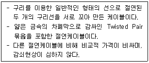
- UTP
- STP
- F/S
- ATP
(정답률: 알수없음)
48. 지절연 케이블에 비해 젤리 충진케이블이 갖는 특징이 아닌 것은?
- 케이블 선로에서 많이 발생하는 침수 및 누수 고장이 적다.
- 젤리 충진케이블은 지절연 케이블보다 초기토자비는 더 소요된다.
- 젤리 충진케이블은 사용구간은 공기주입이 필요하다.
- 공기주입에 의한 유지보수비 절감 및 고장발생을 극소화할 수 있다.
(정답률: 50%)
49. 다음 중 동축 케이블의 특징으로 옳지 않은 것은?
- 외부 도체의 차폐 작용 때문에 고주파에서 차폐성이 우수하다.
- 외부 도체의 표피 작용 때문에 주파수가 높아질수록 누화 특성이 나빠진다.
- 내부 도체와 외부 도체로 된 불평형 선로이다.
- 정전계, 전자계를 외부에 개방하지 않는 폐쇄성 선로이다.
(정답률: 알수없음)
50. 다음 중 광케이블의 규격화(Normalized Frequency) 주파수(V)를 나타낸 식으로 알맞은 것은? (단, n1 : 코어의 굴절률, n2 : 클래드의 굴절률, a : 코어의 반지름)
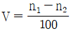
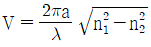
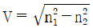
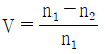
(정답률: 80%)
51. 빛이 광섬유 내에 불순물 등에 의해 부딪쳐 불특정하게 사방으로 퍼져 나가는 현상으로 광파장에 비해 산란물질의 크기가 작은 경우를 무슨 산란이라고 하는가?
- 레일리(Rayleigh) 산란
- 마이(Mie) 산란
- 브릴루앙(Brillouin) 산란
- 라만(Raman) 산란
(정답률: 91%)
52. 광섬유의 클래드의 최대직경이 126[μm], 최소직경이 124[μm], 표준직경이 125[μm] 일 때 광섬유의 클래드 균경률은 얼마인가?
- 0.8[%]
- 1.0[%]
- 1.6[%]
- 2.0[%]
(정답률: 75%)
53. 다음 중 광의 일반적인 성질과 관계없는 것은?
- 동일매체에서 광은 직진한다.
- 매질이 둥굴게 휘었다면 광은 내부에서 손실없이 진행한다.
- 서로 다른 매질이 경계면에서는 입사한 광의 일부는 반사한다.
- 서로 다른 매질로 입사한 광은 진행방향이 바뀐다.
(정답률: 67%)
54. 다음 중 손실이 가장 적은 상용화된 광섬유 종류는 어느 것인가?
- GI형 단일모드 광섬유
- SI형 다중모드 광섬유
- SI형 단일모드 광섬유
- GI형 다중모드 광섬유
(정답률: 알수없음)
55. 교환설비·전송설비 및 통신케이블 등의 접지저항 규정으로 틀린 것은?
- 보호기를 설치하지 않는 구내통신단자함 접지저항은 100[Ω]이다.
- 통신관련시설의 접지저항은 10[Ω] 이하이다.
- 국선 수용회선이 100회선 이하인 주배선반의 접지저항은 100[Ω] 이하이다.
- 접지선은 접지 저항값이 100[Ω]인 경우 직경 1.0[mm] 이상의 PVC 선을 사용한다.
(정답률: 73%)
56. CATV에서 1차측의 신호전력 일부를 2차측에 차등 분기시키는 수동소자는?
- 분배기
- 분기기
- 컨버터
- 커넥터
(정답률: 91%)
57. 다음 중 일반적으로 사용되는 통신 맨홀의 종류에 해당되지 않는 것은?
- 직선형
- 원통형
- 분기 L형
- 분기 십자형
(정답률: 알수없음)
58. 레벨미터법에 의한 선로의 통화 감쇄량의 측정에서 측정회로를 몇 [Ω]으로 종단시켜야 하는가?
- 300[Ω]
- 400[Ω]
- 500[Ω]
- 600[Ω]
(정답률: 알수없음)
59. 다음 중 절대레벨 0[dBm]이 되기 위한 조건이 아닌 것은?
- 회로전력 : 1[mW]
- 회로전류 : 1.291[mA]
- 내부저항 : 600[Ω]
- 부하저항 : 500[Ω]
(정답률: 64%)
60. 어떤 중계 케이블의 잡음 레벨을 측정하였다. 이때 통화전압 55[V], 잡음전압 0.⑤5[V]가 측정되었다. 이때의 잡음 레벨은 얼마인가?
- -30[dB]
- -40[dB]
- -50[dB]
- -60[dB]
(정답률: 50%)
4과목: 전자계산기일반 및 선로설비기준
61. 중앙처리장치가 기억장치 혹은 I/O 장치와의 사이에 데이터를 전송하기 위한 신호선들의 집합을 무엇이라 하는가?
- 신호 버스(Signal Bus)
- 주소 버스(Address Bus)
- 데이터 버스(Data Bus)
- 제어 버스(Control Bus)
(정답률: 90%)
62. 다음 중 연산자(OP Code) 기능과 관련 없는 것은?
- 함수 연산 기능
- 입출력 기능
- 제어 기능
- 주소 지정 기능
(정답률: 62%)
63. 현재 메모리의 분할 상태가 다음과 같을 때, 크기가 100K인 작업을 최초적합(First Fit) 기법에 의해 할당한다면 어느 위치에 적재되는가?
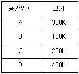
- A
- B
- C
- D
(정답률: 50%)
64. 다음 중 소프트웨어가 가지는 특성이라 할 수 없는 것은?
- 가시성(Visibility)
- 복잡성(Complexity)
- 변경가능성(Changeability)
- 복제성(Duplicability)
(정답률: 알수없음)
65. 다음 중 CPU가 정기적으로 I/O 장치에서 요구되는 서비스 요청이 있는지 확인하는 기법은?
- 인터럽트(Interrupt)
- 버퍼링(Buffering)
- 폴링(Polling)
- 스풀링(Spooling)
(정답률: 55%)
66. BCD(Binary Coded Decimal)로 나타낸 0101 1001 0111 1001 0011 0100 0110를 10진수로 표현하면?
- 5979346
- 5978346
- 5977346
- 5989346
(정답률: 93%)
67. 데이터에 대한 요구가 발생된 시점부터 데이터의 전달이 완료되기까지의 시간을 무엇이라고 하는가?
- Idle Time
- Seek Time
- Search Time
- Acces Time
(정답률: 알수없음)
68. 다음은 부동소수점 수의 덧셈 알고리즘이다. 순서가 올바르게 나열된 것은?
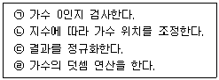
- ㉠ - ㉡ - ㉣ - ㉢
- ㉢ - ㉣ - ㉡ - ㉠
- ㉣ - ㉠ - ㉡ - ㉢
- ㉡ - ㉠ - ㉣ - ㉢
(정답률: 알수없음)
69. 다음 괄호 안에 들어갈 용어로 옳은 것은?
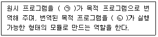
- ㉠ : 컴파일러, ㉡ : 어셈블러
- ㉠ : 링커, ㉡ : 컴파일러
- ㉠ : 컴파일러, ㉡ : 링커
- ㉠ : 링커, ㉡ : 어셈블러
(정답률: 알수없음)
70. 스캐너를 이용하여 읽어진 이미지 형태의 문서를 이미지 분석 과정을 통하여 문자 형태의 문서로 바꾸어 주는 프로그램은 무엇인가?
- OMR(Optical Mark Reader)
- Retouching
- OCR(Optical Character Reader)
- 이미지 편집
(정답률: 70%)
71. 미래창조과학부장관은 전기통신의 원활한 발전과 정보화 사회의 촉진을 위하여 전기통신기본계획을 수립하여 공고하여야 하는데 이때 미리 관계행정기관의 장과 협의하여야 하는 사항은?
- 전기통신의 이용효율화에 관한 사항
- 전기통신사업에 관한 사항
- 전기통신설비에 관한 사항
- 전기통신의 질서유지에 관한 사항
(정답률: 55%)
72. 다음 중 '방송통신발전기본법'의 목적에 해당되지 않는 항은?
- 방송통신의 진흥
- 방송통신의 기술기준·재난관리
- 방송통신 기술사업의 세부관리
- 방송통신의 공익성·공공성 보장
(정답률: 알수없음)
73. '국가기술자격법'에 따라 정보통신 관련 분야의 기술자격을 취득한 사람으로서 미래창조과학부장관으로부터 인정을 받은 사람을 무엇이라 하는가?
- 방송통신전문가
- 방송통신사업자
- 정보통신기술자
- 정보통신공사업자
(정답률: 92%)
74. '정보통신공사업법'에 관한 사항 중 다음 문장의 괄호 안에 들어갈 적합한 것은?
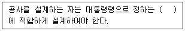
- 기술표준
- 기술기준
- 설계표준
- 설계기준
(정답률: 67%)
75. 정보통신설비공사의 설계도서에 해당되지 않는 것은?
- 표준서
- 계획서
- 시방서
- 공사비명세서
(정답률: 73%)
76. 국선과 구내간선케이블 또는 구내케이블을 종단하여 상호 연결하는 통신용 분배함을 무엇이라 하는가?
- 단말장치함
- 구내선로설비함
- 국선단자함
- 국선접속설비함
(정답률: 알수없음)
77. 다음은 절연저항에 관한 내용이다. 괄호 안에 들어갈 내용 중 알맞게 짝지어진 것은?
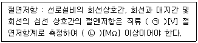
- ㉠ : 350, ㉡ : 5
- ㉠ : 500, ㉡ : 10
- ㉠ : 650, ㉡ : 15
- ㉠ : 700, ㉡ : 20
(정답률: 67%)
78. 전기통신에서 교환설비, 단말장치 등으로부터 수신된 전기통신 부호, 문언, 음향 또는 영상을 변환, 재생 또는 증폭하여 유선 또는 무선으로 송신하거나 수신하는 설비를 무엇이라 하는가?
- 선로설비
- 전송설비
- 교환설비
- 전원설비
(정답률: 알수없음)
79. 전기통신사업자가 전기통신역무를 제공하기 위한 공사로서 감리용역을 발주하지 않아도 되는 총 공사금액의 기준은?
- 5천만원 미만
- 1억원 미만
- 1억 5천만원 미만
- 2억원 미만
(정답률: 알수없음)
80. 업무용 건축물에서 바닥덕트 또는 배관의 매구간 교차점 또는 완곡부에서 실내접속함의 간격은 몇 [m] 이내가 되도록 설치하여야 하는가?
- 3[m]
- 5[m]
- 7.5[m]
- 10[m]
(정답률: 73%)